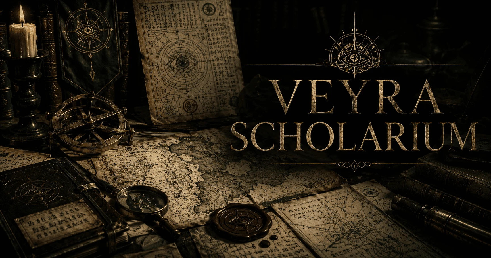
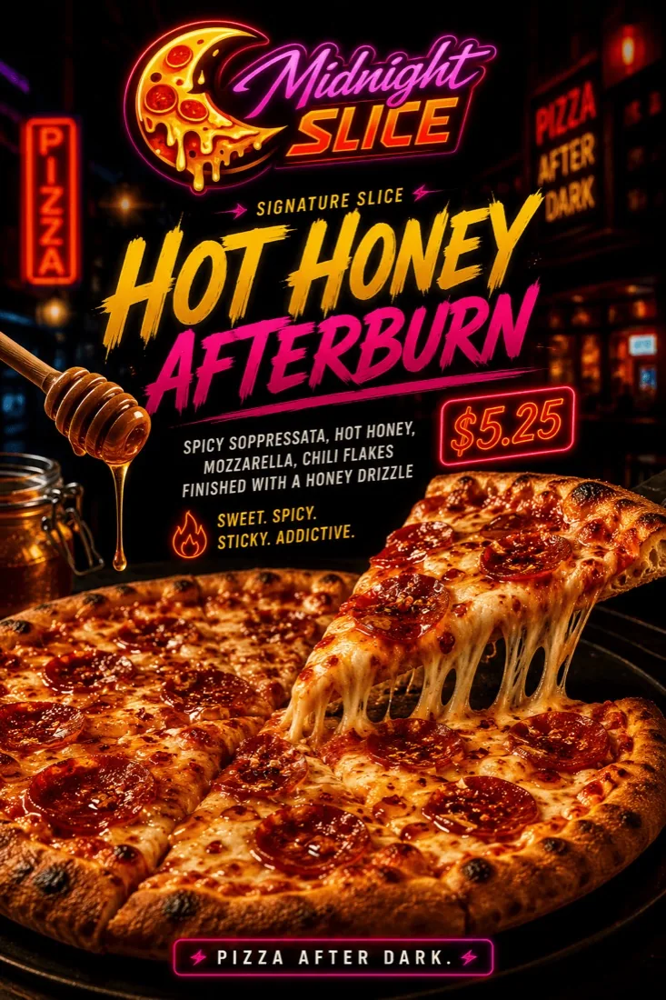

Keith A Godfrey
Website design & development for a photography portfolio that helped Keith land a job. All photography by Keith A Godfrey.
Read Keith’s project storyWebsites, logos, and graphic design.
An independent design and development studio in Dallas–Fort Worth, run by Matt Livingston.
Website design & development for a photography portfolio that helped Keith land a job. All photography by Keith A Godfrey.
Read Keith’s project story
An immersive world of knowledge and discovery.
The brief, the decisions, and what came next.
Broken forms, awkward layouts, outdated content. Let’s get it working properly.
A new website or a considered redesign, built around your business.
A distinctive mark and a visual direction that feels like you.
Menus, flyers, business cards, and graphics that carry your name.

A restaurant concept with a logo, menu, campaign artwork, and a website to match. Explore the example site
The menu, the identity, the story
An example website for a fictional law firm, with practice pages, attorney profiles, and an editorial approach.
The projects I happily get lost in
Brands from Parallel Worlds and Digital Relics Archive are two of my favorite things to work on. They’re where I follow an idea beyond the brief: building its atmosphere, its objects, and the little details that make an imagined place feel real.


Fictional businesses with lives beyond their logos. Tavern companies, courier divisions, strange institutions: each identity hints at the culture and everyday world around it. This is where branding becomes storytelling.
Explore the parallel worlds
Recovered devices, implied histories, and a quiet, cinematic future. A collection of fictional artifacts and OLED-friendly wallpaper art, built around the pleasure of discovering something that seems to have a story before you ever touch it.
Enter the Digital Relics ArchiveThe person behind the pixels
Matt Livingston / ManicWebmaster
I’m the designer and developer behind ManicWebmaster. I work directly with small businesses and people building something of their own. You’ll talk with the person designing and building your project, from the first conversation through the finished work.
Tell me what you need, what’s getting in the way, or what you’re imagining.
We’ll work out the approach, what’s included, and the price before paid work begins.
I’ll design and build it, with your input along the way.
Client results
Two recent client projects, in brief. The full project stories cover the brief, the decisions, and what came next.
Keith used his new photography portfolio in his job search and landed a job. He’s very happy with the site and the way it presents his work.
Paul is pleased with the CrossRoads redesign so far. A filterable gallery and before-and-after comparisons now let the work speak for the business.
Small web tools for the details that make a website feel finished.
Notes on websites, design, and making your business easier to find.
A small fix, a fresh start, or something a little unusual. Tell me what you’re working on. You’ll talk directly with Matt Livingston.
I’m based in Dallas–Fort Worth and love working with local businesses, but I take on projects from anywhere. (The 720 number? It came with me from Colorado.)
Your quote will explain the work, deliverables, revision scope, timing, and price before any paid work begins.